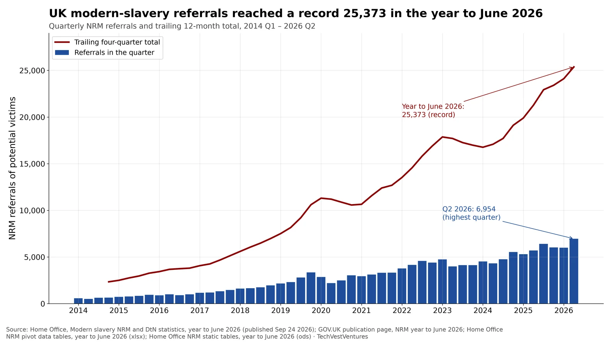
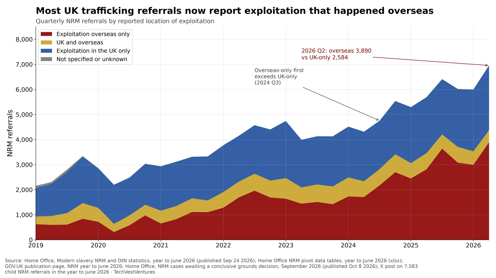

Q10. UK NRM

Potential victims of modern slavery referred into the UK National Referral Mechanism, by quarter from 2014 Q1 through 2026 Q2, from the Home Office pivot tables published with the year-to-June 2026 release (data extracted August 2026). Quarterly referrals rose from a few hundred a quarter in 2014 to a record 6,954 in April–June 2026. The trailing four-quarter total reached 25,373 in the year ending June 2026 — the highest 12-month figure since the NRM began, and 5% above the 24,108 recorded in the year ending March 2026.
- Calendar-year totals in the same file: 19,113 in 2024, 23,406 in 2025, and 12,949 in the first half of 2026.
- In the year to June 2026 the most common nationalities were UK (5,548, 22%), Eritrean (3,220, 13%) and Somali (2,741, 11%).
- Children aged 17 or under at referral accounted for 7,583 of the 25,373 referrals in the year to June 2026 (30%); adults 17,674.
- The Home Office issued 23,573 reasonable-grounds decisions in that year, 64% (15,076) of them positive — 55% for adults and 86% for children. A separate Duty to Notify channel recorded 7,070 adult reports; those must not be added to the NRM total.
Note: NRM counts are referrals of potential victims, not confirmed trafficking cases. Adults must consent to be referred; children need not. The Home Office notes that data come from a live case-management system (cut taken in August 2026) and can be revised. Referrals before 2014 are excluded from the pivot tables. A rise can reflect more identification as well as more exploitation.
Sources: Home Office, Modern slavery NRM and DtN statistics, year to June 2026 (published Sep 24 2026) GOV.UK publication page, NRM year to June 2026 Home Office NRM pivot data tables, year to June 2026 (xlsx) Home Office NRM static tables, year to June 2026 (ods)

NRM referrals by the location of exploitation the potential victim reported, quarterly from 2019 Q1 through 2026 Q2 (Home Office pivot tables, year-to-June 2026 release). Referrals describing exploitation exclusively overseas were 13,591 in the year ending June 2026 — 54% of the 25,373 referrals, and the highest exclusively-overseas total since the NRM began. In April–June 2026 alone, overseas-only referrals (3,890) exceeded UK-only referrals (2,584). As recently as 2023, UK-only cases still outnumbered overseas-only cases (8,098 against 6,008).
- Year to June 2026: overseas only 13,591 (54%), UK only 9,564, both UK and overseas 2,218.
- Overseas-only referrals first exceeded UK-only referrals in 2024 Q3 (2,173 against 1,933) and have stayed ahead in every quarter since.
- As of 30 September 2026, 6,277 cases with a positive reasonable-grounds decision were still awaiting a conclusive-grounds decision — 80% below the peak of 31,101 at the end of January 2023 (Home Office monthly waiting-list update published Oct 8 2026).
- An X thread on the same release highlighted the 7,583 child referrals in the year to June 2026 (https://x.com/TruthAsylum121/status/2103421813845807479). Those child counts match the pivot tables used here.
Note: Location of exploitation is reported by the potential victim (Home Office Note 6). 'Overseas' means the exploitation was reported as taking place only outside the UK; it is not a count of nationality. Unknown location was common before 2019 and is why the chart starts then. Confirmed victims are a smaller set than referrals: 71% of 21,564 conclusive-grounds decisions in the year to June 2026 were positive.
Sources: Home Office, Modern slavery NRM and DtN statistics, year to June 2026 (published Sep 24 2026) Home Office NRM pivot data tables, year to June 2026 (xlsx) GOV.UK publication page, NRM year to June 2026 Home Office, NRM cases awaiting a conclusive grounds decision, September 2026 (published Oct 8 2026) X post on 7,583 child NRM referrals in the year to June 2026